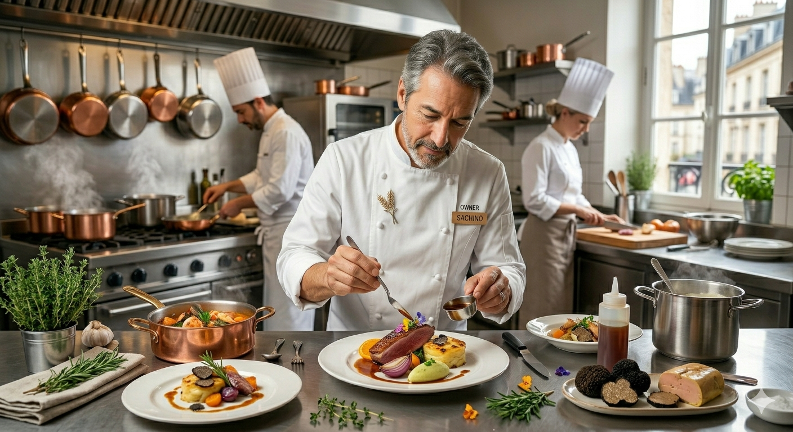

カプリチョーザの代名詞ともいえるこの一皿。じっくりと加熱して旨味を引き出したニンニクと、選び抜かれた完熟トマト。シンプルな構成だからこそ、一切の妥協が許されない職人の技が光ります。
山形駅直結の便利な場所で、本場イタリアの情熱と活気をそのままに。私たちは、ひと口で笑顔になる魔法のような味を守り続けています。
アクセス抜群: 新幹線の待ち時間やお買い物ついでに。駅から徒歩1分の好立地。
多様なシーン: 広々とした店内で、女子会、デート、家族のお祝いにも対応。
テイクアウトOK: 自慢の味をオフィスやご家庭でもお楽しみいただけます。
山形エスパル店をもっと快適に、もっと楽しんでいただくために。お客様の「あったらいいな」に応える新サービスを準備中です。
「乗車まであと30分!」そんな時でも安心。ご注文後すぐサーブされ、短時間で食べやすいショートパスタや特選スープなどのクイックメニュー表が登場します。
大人気パスタをマイルドな味に変更できたり、一口サイズのミニピッツァ、キッズドリンク・おもちゃ付き!親子で気兼ねなく分け合えるお得なファミリーパックです。
創業者・本多征昭。イタリア国立エノルケホテル学校を首席で卒業した彼は、1978年、渋谷に「カプリチョーザ」をオープンしました。
「本格的なイタリア料理を、もっと多くの人に腹一杯食べてほしい」。その想いから生まれた大盛りシェアスタイルは、日本の外食文化を大きく変えました。山形エスパル店でも、その「情熱の味」を大切に受け継いでいます。
ブランドストーリーを見る
※団体予約・パーティーのご相談もお電話で承ります